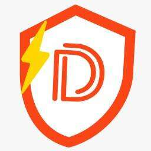 DRAPER HEROES Draper Heroes 是一个定制的插图角色，以 Draper 生态系统的社区成员为蓝本，旨在表达一种创业精神。 通过手绘背景、面部表情和服装，Draper Heroes 体现了 Draper 创业生态系
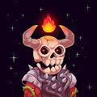 Dreadfulz 由于 Stake 合约，Opensea 上 73.82% 的 StakedHolder 计数不正确Stake & Earn $DREAD：https://stake.dreadfulz.com7,777 Dreadfulz 已
Dreamloops 作为 Bitlectro Labs 的第一个版本，Dreamloops 以编程方式生成 8 位音乐循环和 16 位艺术作品，由 STRFKR 乐队的 Keil Corcoran 制作。 五分之一的 Dreamloops (20%) 可兑换为物理媒体（黑胶
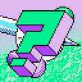 dreamloops-v1 作为 Bitlectro Labs 的第一个版本，Dreamloops 以编程方式生成 8 位音乐循环和 16 位艺术作品，由 STRFKR 乐队的 Keil Corcoran 制作。 五分之一的 Dreamloops (20%) 可兑换为物理媒体（黑胶
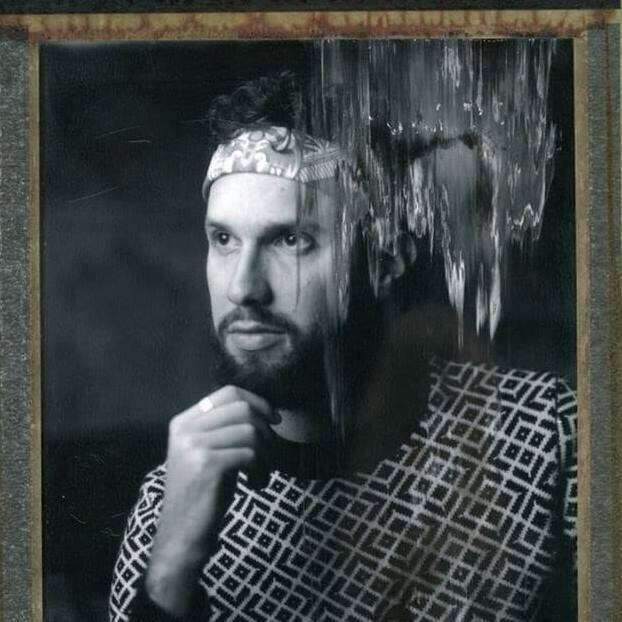 DRIP DROP BY DAVE KRUGMAN “Drip Drop”是纽约摄影师 Dave Krugman 的 1111 1/1 摄影 NFT 的凝聚力集合。该系列是对来自 Art Blocks 等项目的生成艺术的颂歌，其灵感来自 Chromie Squiggles、Fi
DRONES by TRIPLE SIX 三六号无人机。 收集 1600 架无人机。 持有者在 TRIPLE SIX 生态系统中获得独家特权，包括在 ASCENSION 市场上使用的 TRIPLE SIX TOKEN $SOULS 的被动和主动质押等等。ASCENSION：ht
DROP'S - META KAWAII DROP’S 是东京品牌 META KAWAII 的 3D 头像系列。 我们的使命是为Web3.0时代创造一个跨越现实世界和数字世界边界的新品牌。 DROP’S 持有者将受益于会员访问、独家掉落等
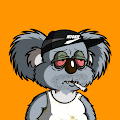 DropBears NFT Drop Bears 是以太坊区块链上的一系列生成艺术，由具有新鲜幽默感的澳大利亚人创立。 这些 Drop Bears 作为独家社区的会员，包括会员专享福利、合作、未来掉落和特殊实
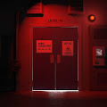 DRRT DRRT 是一组独特的机器人，每个机器人都代表社区支持的唱片公司的社交代币。 DRRT NFT - 常见问题（FAQ） ▶ 什么是 DRRT？ DRRT 是一个 NFT（Non-fun
DrugReceipts 最初是 2015 年餐厅和酒吧收据上留下的涂鸦，现在是以太坊区块链上 10,000 个独特的以编程方式生成的 NFT 的集合。 基于 Arlo Eisenberg 的艺术，Drug Receipts 建立在艺术、科学、怀
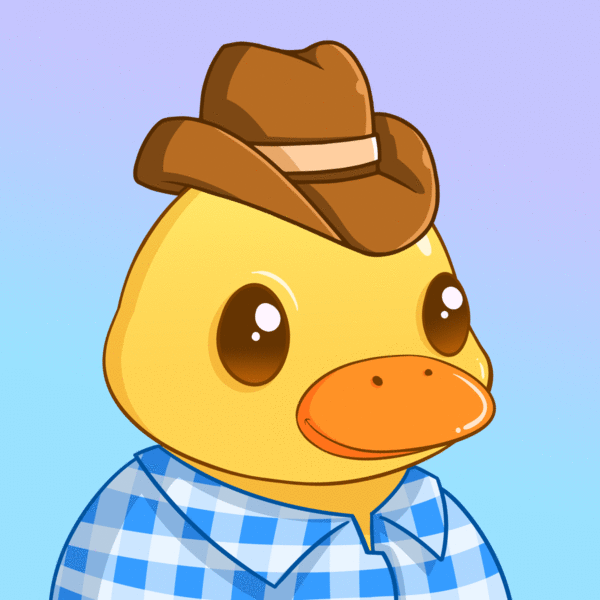 Duck Frens Duck Frens 是一个社区驱动的以太坊区块链上 5,000 个随机生成的 NFT 集合。 我们想建立一大群准备一起潜入元宇宙的狂热分子。 对于零 eth，您将收到 1 个 Duck Fren NFT，
DuckDAO Hunters DuckDAO Hunters 是一款可收藏的纸牌游戏，参与者竞相完成 NFT 集，以便有机会在赛季中赢取奖品。 游戏由 48 张卡片组成——每张卡片都有自己的稀有度、故事和风格。 大奖
DuskBreakers 成为 DuskBreaker 意味着加入由 10,000 名新兵组成的精选小队，他们每天都在探索充满朋友、敌人和超凡脱俗技术的神秘外星飞船。您将成为一个社区的一员，该社区直接影响
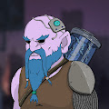 Dwarfs Alt World (DAW) 过去 7 天没有出售 Dwarfs Alt World (DAW)。 DAW 代币是一个独特的项目，因为它的生态系统将结合 NFT 和 DEFI 功能。 Dwarfs Alt World (DAW) NFT - 常见问题 (FAQ) ▶ 什么是矮人替代世界 (DA
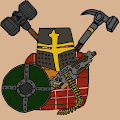 dwarftown.wtf 第3333章，挥舞你的斧头，我们将到达你的区域 Dwarftown wtf NFT - 常见问题（FAQ） ▶ 什么是矮人镇wtf？ Dwarftown wtf 是一个 NFT（Non-fungible to
Dysto Apez Official Polygon 戴斯托公司 Dysto Apez 是一个由其社区驱动的元界品牌。 在通过完全动画的 NFT 集合突破像素艺术的极限之后，我们开始在数字世界上留下我们的印记。 我们的社区以 Discord
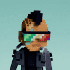 DystoPunks VX DystoPunks VX NFT - 常见问题（FAQ） ▶ 什么是 DystoPunks VX？ DystoPunks VX 是一个 NFT（不可替代令牌）集合。存储在区块链上的数字艺术品集合。 ▶ 有多少 DystoPunks VX 代币？ 总共有 7,551 个
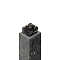 E-DAMER E-DAMER NFT - 常见问题（FAQ） ▶ 什么是 E-DAMER？ E-DAMER 是一个 NFT（不可替代代币）集合。存储在区块链上的数字艺术品集合。 ▶ 有多少个 E-DAMER 代币？ 总共有
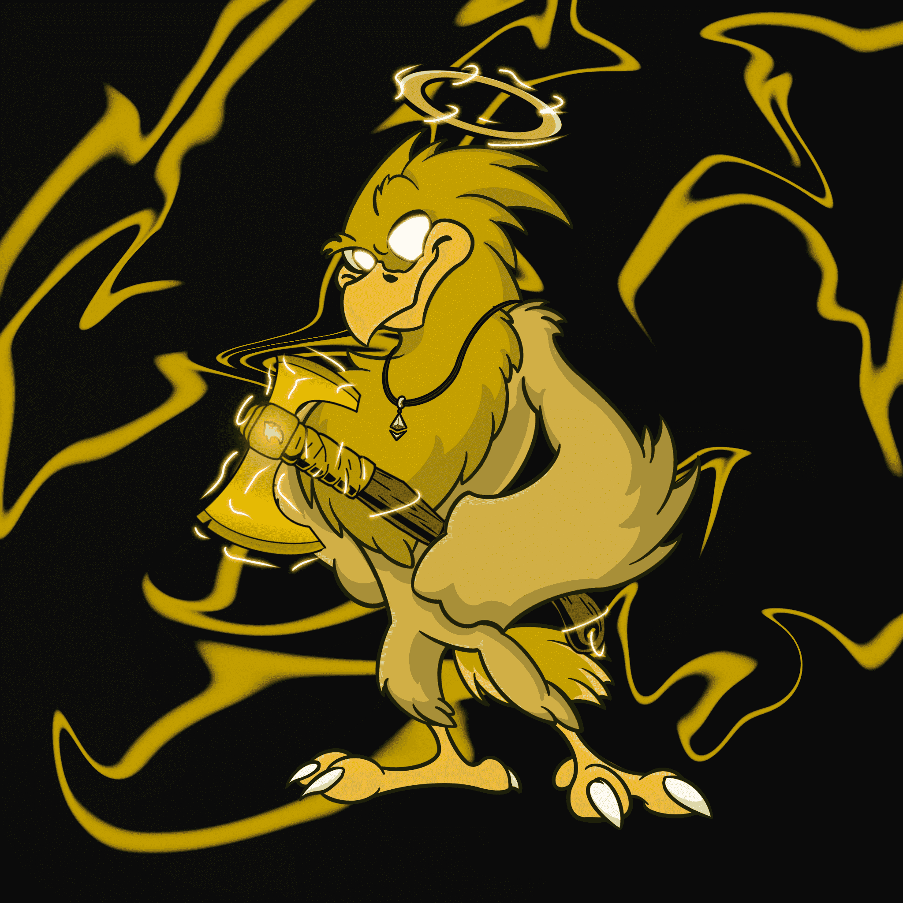 Eager Eagles NFT Eager Eagles NFT NFT - 常见问题（FAQ） ▶ 什么是 Eager Eagles NFT？ Eager Eagles NFT 是一个 NFT（不可替代代币）集合。存储在区块链上的数字艺术品集合。 ▶ Eager Eagles NFT 代币有多少？
Easy Demons Club Official Easy Demons Club 官方 NFT - 常见问题 (FAQ) ▶ 什么是Easy Demons Club官方？ Easy Demons Club Official 是一个 NFT（非同质代币）集合。存储在区块链上的数字艺术品集合。 ▶ Easy Demons Club 官方
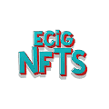 ECIG NFTS 过去 7 天内没有出售 ECIG NFTS。 ECIG NFTS 是 Metaverse Ready VAPES 的限量版系列。 每 2 周新一滴。全部收集！ 联系我们了解海关、合作伙伴和转售商！… 社区: https://discord.gg/CyZjZKMsWW
Editions x Guido 版本 x Guido NFT - 常见问题（FAQ） ▶ 什么是 Editions x Guido？ Editions x Guido 是一个 NFT（非同质代币）集合。存储在区块链上的数字艺术品集合。 ▶ 有多少个 Editions x Guido
Egg Heads Club 问候地球人！ 欢迎来到蛋头俱乐部。 Eggtopia 及其由 3,500 个 Egg Heads 组成的社区的所在地——这是在以太坊区块链上铸造的最巧妙的 NFT。再加上独特的复古游戏体验。 永
EGS Founding Fathers (gen 1) 这是 EGS 的第一个智能合约，但是我们现在正在重新部署我们的合约并在 1 到 2 周内重新启动。这些开国元勋（第 1 代）NFT 的当前持有者在重新启动时将收到
Elderly Ape Retirement Club ！退休。什么是 EARC？ Elderly Apes Retirement Club 是一个 5000 个衍生 NFT 集合。你问为什么是老猿？ 好吧，对于我们这些“心地老了”或慢慢开始觉得我们的年龄在悄悄爬上来的
Elemental by Fang Lijun 关于元素 方力钧的 Elemental 是一个 NFT 系列，将艺术家画作中熟悉的光头人物与土、水、火和空气的表现相结合。每幅图像的构图都传达了强烈碰撞的影响。 Elemental 的灵感来
ElementPrimeArtifacts 那么什么是元素元神器？ 2,100 件元素 Prime 神器散布在 Polygon 的宇宙中。 每个 Artifact 都是一个独特生成的 NFT，让拥有者拥有访问 The Ancients 的专属能力。 加入乐趣，成为 Element Prime Artifacts 社
Elysium Code 极乐壳 我们是一个基于创作者的社区。 Elysium Shell 是我们呈现给新世界的第一章。 与社区一起，我们将把可能性带入 Web3 空间。 上线后，一个融合虚拟和实体世界的品牌
Emoji Keys 表情符号键统计 创建于 9 个月前，10,000 代币供应，10% 费用 Emoji Keys NFT 在过去 7 天内售出 3 次。Emoji Keys 的总销售额为 0.33 美元。一个 Emoji Keys NFT 的平均价
Emotes by Heart You 心你的表情 爱你 Heart You 的 Genesis PFP 专门用于 Proof Collective 和 Heart You 社区。要了解有关 Emotes 和 Heart You 的更多信息，请关注 Twitter 和官方 Heart You Discord。Heart You 是一个自我理解、
Emotional Hearts (NVLPE) 情感之心 (NVLPE) 情感之心 (NVLPE) Emotionally Unavailable X The Heart Project 合作由以太坊区块链上的 1,888 个独特的 NFT 组成。该系列是一个收藏品，其好处和实用性以独家服装下降（物理和数字）和接触
Employables Off 就业人数统计 创建于 3 个月前，5,000 代币供应，7.5% 费用 Employables Off NFT 在过去 7 天内售出 7 次。Employables Off 的总销售额为 34.58 美元。NFT 的
EmployablesNFT EmployablesNFT 统计 创建于 4 个月前，5,000 代币供应，5% 费用 对于那些做最低限度的人。 Employables 是一个关于所有认为自己注定要成为某人的人的故事，但最终却以朝九晚
Empower Women Planet Official Collection Empower Women Planet 官方系列 赋权女性星球#1307 拥有者 [创意收藏家] 能见度：3 次观看 日程：销售将于 2023 年 1 月 16 日凌晨 2:08 GMT+8结束 Empower Women Planet 是为世界上所有被
Empress Princess Butterfly 来自幼儿绘画神童的 5,000 NFT 年仅 4 岁的 Empress 发布了她的第三个备受期待的#nft 系列！这位才华横溢的优秀艺术家和 nft 艺术家从 1 岁开始绘画。Empress 创
Enchanted Game 魔法游戏 more_horiz 魔法游戏NFT真正持有者人数：979 成千上万只[乌龟]和 [山羊]栖息在同一个岛上，但它们相处得并不融洽。Stake Tortoises 每天生成 $EG
Encryptas 加密货币 10,000 只不露面的程序员小鸡通过代码和鲜花拯救世界！ 肩负赋予未来女性领导者浪潮的使命：MalalaFund 和 CodeToInspire 的骄傲支持者 10,000 只不露面的程序
EnfantsTerribles 可怕的儿童 more_horiz 经过 ：[TeamEnfantsTerribles] Enfants Terribles 是一个 PFP 集合的可爱和叛逆的孩子。我们希望通过我们儿童外表背后的艺术和故事来
Enlightened Rats 开明的老鼠 Enlightened Rats NFT 在过去 7 天内售出 1 次。Enlightened Rats 的总销售额为 133.93 美元。一只 Enlightened Rats NFT 的平均价格为 133.9 美元。有 564 名 Enlightened Rats 所有者，总共拥有 888
ENS Maxis ENS 明讯 more_horiz 经过 ：[ENSMaxisDeployer] 没有版税收集！ ENS Maxis 是第一个 NFT 集合，它为 ENS 域持有者的多元化社区提供了一种通过他们的 PFP 代表他们
Entities MultiPass 实体多通道 一个包含 4,000 个 NFT 的集合，标志着 Entities 的起源，这是一个由艺术家为艺术家构建的生成 NFT 集合的无代码启动板。获得 MetaGeckos 的独家铸币前访问权、即将推出的
Epic Eagles 史诗老鹰队数据 创建于 12 个月前，7,676 代币供应，OpenSea 验证集合，7.5% 费用 2,839 名 Discord 成员，6,228 位推特关注者 Epic Eagles NFT 在过去 7 天内售